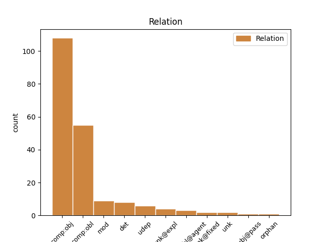
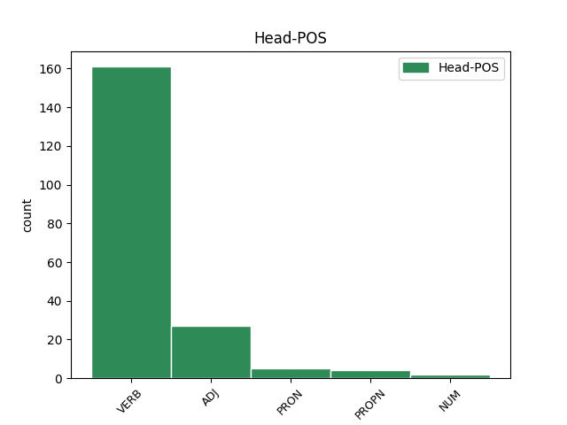
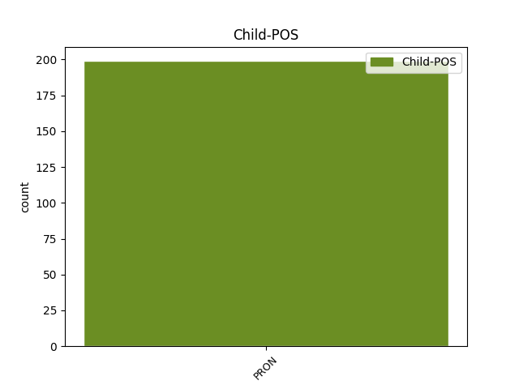

Distribution of features within this leaf



Agreement Rules sorted by frequency.
- When the dependent token is the direct object complements(comp:obj) of the head token, and the head token is VERB and the dependent token is PRON.
1 г҃и _ _ _ _ 0 _ _ _
2 аште _ _ _ _ 0 _ _ _
3 тꙑ _ _ _ _ 0 _ _ _
4 еси _ _ _ _ 0 _ _ _
5 възѧлъ _ _ _ _ 0 _ _ _
6 повѣждь _ _ _ _ 0 _ _ _
7 мьнѣ _ _ _ _ 0 _ _ _
8 къде _ _ _ _ 0 _ _ _
9 и и PRON Pp Case=Acc|Gender=Masc|Number=Sing|Person=3|PronType=Prs 11 comp:obj _ ref=JOHN_20.15
10 еси _ _ _ _ 0 _ _ _
11 положилъ положити VERB V- Aspect=Res|Case=Nom|Gender=Masc|Number=Sing|Strength=Strong|VerbForm=Part|Voice=Act 0 _ _ _
12 ꙇ _ _ _ _ 0 _ _ _
13 азъ _ _ _ _ 0 _ _ _
14 ꙇ _ _ _ _ 0 _ _ _
15 вьзъмѫ _ _ _ _ 0 _ _ _
1 а҅ще _ _ _ _ 0 _ _ _
2 не _ _ _ _ 0 _ _ _
3 бимь _ _ _ _ 0 _ _ _
4 пришелъ _ _ _ _ 0 _ _ _
5 и _ _ _ _ 0 _ _ _
6 г҃лалъ глаголати VERB V- Aspect=Res|Case=Nom|Gender=Masc|Number=Sing|Strength=Strong|VerbForm=Part|Voice=Act 0 _ _ _
7 имъ и PRON Pp Case=Dat|Gender=Masc|Number=Plur|Person=3|PronType=Prs 6 comp:obl _ ref=JOHN_15.22
8 грѣха _ _ _ _ 0 _ _ _
9 не _ _ _ _ 0 _ _ _
10 бѫ _ _ _ _ 0 _ _ _
11 имѣли _ _ _ _ 0 _ _ _
1 а _ _ _ _ 0 _ _ _
2 понеже _ _ _ _ 0 _ _ _
3 крѣплеи крѣпъ ADJ A- Case=Nom|Degree=Cmp|Gender=Masc|Number=Sing|Strength=Strong 0 _ _ _
4 его и PRON Pp Case=Gen|Gender=Masc|Number=Sing|Person=3|PronType=Prs 3 comp:obl _ ref=LUKE_11.22
5 нашедъ _ _ _ _ 0 _ _ _
6 побѣдитъ _ _ _ _ 0 _ _ _
7 і _ _ _ _ 0 _ _ _
8 и _ _ _ _ 0 _ _ _
9 вьсѣ _ _ _ _ 0 _ _ _
10 орѫжиѣ _ _ _ _ 0 _ _ _
11 его _ _ _ _ 0 _ _ _
12 отьметъ _ _ _ _ 0 _ _ _
13 на _ _ _ _ 0 _ _ _
14 нѣже _ _ _ _ 0 _ _ _
15 оупъвааше _ _ _ _ 0 _ _ _
16 и _ _ _ _ 0 _ _ _
17 користь _ _ _ _ 0 _ _ _
18 его _ _ _ _ 0 _ _ _
19 раздаатъ _ _ _ _ 0 _ _ _
1 оу҅чителю _ _ _ _ 0 _ _ _
2 благꙑ _ _ _ _ 0 _ _ _
3 что чьто PRON Pi Case=Acc|Gender=Neut|Number=Sing|PronType=Int 4 det _ ref=MATT_19.16
4 благо благъ ADJ A- Case=Acc|Degree=Pos|Gender=Neut|Number=Sing|Strength=Strong 0 _ _ _
5 сътворѭ _ _ _ _ 0 _ _ _
6 да _ _ _ _ 0 _ _ _
7 имамъ _ _ _ _ 0 _ _ _
8 животъ _ _ _ _ 0 _ _ _
9 вѣчънꙑ _ _ _ _ 0 _ _ _
1 дьвѣма _ _ _ _ 0 _ _ _
2 сътома _ _ _ _ 0 _ _ _
3 пѣнѧѕъ _ _ _ _ 0 _ _ _
4 хлѣбъ _ _ _ _ 0 _ _ _
5 не _ _ _ _ 0 _ _ _
6 довьлѫтъ _ _ _ _ 0 _ _ _
7 имъ _ _ _ _ 0 _ _ _
8 да _ _ _ _ 0 _ _ _
9 къжьдо къжьдо ADJ Px Case=Nom|Gender=Masc|Number=Sing 0 _ _ _
10 ихъ и PRON Pp Case=Gen|Gender=Masc|Number=Plur|Person=3|PronType=Prs 9 mod _ ref=JOHN_6.7
11 мало _ _ _ _ 0 _ _ _
12 чъто _ _ _ _ 0 _ _ _
13 прииметъ _ _ _ _ 0 _ _ _
1 ꙇ _ _ _ _ 0 _ _ _
2 пристѫпь _ _ _ _ 0 _ _ _
3 единъ _ _ _ _ 0 _ _ _
4 отъ _ _ _ _ 0 _ _ _
5 кънижьникъ _ _ _ _ 0 _ _ _
6 слꙑшавъ _ _ _ _ 0 _ _ _
7 ѩ _ _ _ _ 0 _ _ _
8 сътѧѕаѭштѧ сътѧѕати VERB V- Case=Acc|Gender=Masc|Number=Plur|Strength=Strong|Tense=Pres|VerbForm=Part|Voice=Act 0 _ _ _
9 сѧ себе PRON Pk Case=Acc|Gender=Masc|Number=Sing|Person=3|PronType=Prs|Reflex=Yes 8 unk@expl _ ref=MARK_12.28
10 видѣвъ _ _ _ _ 0 _ _ _
11 ѣко _ _ _ _ 0 _ _ _
12 добрѣ _ _ _ _ 0 _ _ _
13 отъвѣшта _ _ _ _ 0 _ _ _
14 имъ _ _ _ _ 0 _ _ _
15 въпроси _ _ _ _ 0 _ _ _
16 и _ _ _ _ 0 _ _ _
1 отъвѣштавъ _ _ _ _ 0 _ _ _
2 же _ _ _ _ 0 _ _ _
3 единъ _ _ _ _ 0 _ _ _
4 емоуже иже PRON Pr Case=Dat|Gender=Masc|Number=Sing|PronType=Rel 6 comp:obl _ ref=LUKE_24.18
5 имѧ _ _ _ _ 0 _ _ _
6 клеопа клеопа PROPN Ne Case=Nom|Gender=Masc|Number=Sing 0 _ _ _
7 рече _ _ _ _ 0 _ _ _
8 къ _ _ _ _ 0 _ _ _
9 немоу _ _ _ _ 0 _ _ _
1 бꙑстъ _ _ _ _ 0 _ _ _
2 же _ _ _ _ 0 _ _ _
3 и _ _ _ _ 0 _ _ _
4 пьрѣ _ _ _ _ 0 _ _ _
5 вь _ _ _ _ 0 _ _ _
6 ихъ _ _ _ _ 0 _ _ _
7 кꙑи кꙑи PRON Pi Case=Nom|Gender=Masc|Number=Sing|PronType=Int 0 _ _ _
8 мънитъ _ _ _ _ 0 _ _ _
9 сѧ _ _ _ _ 0 _ _ _
10 ихь и PRON Pp Case=Gen|Gender=Masc|Number=Plur|Person=3|PronType=Prs 7 mod _ ref=LUKE_22.24
11 бꙑти _ _ _ _ 0 _ _ _
12 болеи _ _ _ _ 0 _ _ _
1 приключишѧ _ _ _ _ 0 _ _ _
2 же _ _ _ _ 0 _ _ _
3 сѧ _ _ _ _ 0 _ _ _
4 едини _ _ _ _ 0 _ _ _
5 въ _ _ _ _ 0 _ _ _
6 то _ _ _ _ 0 _ _ _
7 врѣмѧ _ _ _ _ 0 _ _ _
8 повѣдаѫште _ _ _ _ 0 _ _ _
9 емоу _ _ _ _ 0 _ _ _
10 о _ _ _ _ 0 _ _ _
11 галилеихъ _ _ _ _ 0 _ _ _
12 ꙇ҅. иже PRON Pr Case=Gen|Gender=Masc|Number=Plur|PronType=Rel 0 _ _ _
13 хъже хъже PRON Pr Case=Gen|Gender=Masc|Number=Plur|PronType=Rel 12 unk@fixed _ ref=LUKE_13.1
14 кръвъ _ _ _ _ 0 _ _ _
15 пилатъ _ _ _ _ 0 _ _ _
16 съмѣси _ _ _ _ 0 _ _ _
17 съ _ _ _ _ 0 _ _ _
18 жрътвами _ _ _ _ 0 _ _ _
19 ихъ _ _ _ _ 0 _ _ _
1 ꙇ _ _ _ _ 0 _ _ _
2 с҃нъ _ _ _ _ 0 _ _ _
3 оубо _ _ _ _ 0 _ _ _
4 ч҃лчьскꙑ _ _ _ _ 0 _ _ _
5 по _ _ _ _ 0 _ _ _
6 нареченоумоу _ _ _ _ 0 _ _ _
7 идетъ _ _ _ _ 0 _ _ _
8 обаче _ _ _ _ 0 _ _ _
9 горе _ _ _ _ 0 _ _ _
10 ч҃лвкоу _ _ _ _ 0 _ _ _
11 томоу _ _ _ _ 0 _ _ _
12 имьже иже PRON Pr Case=Ins|Gender=Masc|Number=Sing|PronType=Rel 13 comp:obl@agent _ ref=LUKE_22.22
13 прѣданъ прѣдати VERB V- Case=Nom|Gender=Masc|Number=Sing|Strength=Strong|Tense=Past|VerbForm=Part|Voice=Pass 0 _ _ _
14 бѫдетъ _ _ _ _ 0 _ _ _
1 ꙇ _ _ _ _ 0 _ _ _
2 скръбѧще _ _ _ _ 0 _ _ _
3 ѕѣло _ _ _ _ 0 _ _ _
4 начѧсѧ _ _ _ _ 0 _ _ _
5 г҃лти _ _ _ _ 0 _ _ _
6 емоу _ _ _ _ 0 _ _ _
7 единъ ѥдинъ NUM Ma Case=Nom|Gender=Masc|Number=Sing 0 _ _ _
8 кожъдо _ _ _ _ 0 _ _ _
9 ихъ и PRON Pp Case=Gen|Gender=Masc|Number=Plur|Person=3|PronType=Prs 7 mod _ ref=MATT_26.22
1 Тъгда _ _ _ _ 0 _ _ _
2 видѣвъ _ _ _ _ 0 _ _ _
3 июда _ _ _ _ 0 _ _ _
4 прѣдавꙑи прѣдати VERB V- Case=Nom|Gender=Masc|Number=Sing|Strength=Weak|Tense=Past|VerbForm=Part|Voice=Act 0 _ _ _
5 его и PRON Pp Case=Gen|Gender=Masc|Number=Sing|Person=3|PronType=Prs 4 det _ ref=MATT_27.3
6 ѣко _ _ _ _ 0 _ _ _
7 осѫдишѧ _ _ _ _ 0 _ _ _
8 и _ _ _ _ 0 _ _ _
9 раскаавъ _ _ _ _ 0 _ _ _
10 сѧ _ _ _ _ 0 _ _ _
11 възврати _ _ _ _ 0 _ _ _
12 три _ _ _ _ 0 _ _ _
13 десѧти _ _ _ _ 0 _ _ _
14 съребрьникъ _ _ _ _ 0 _ _ _
15 архиереомъ _ _ _ _ 0 _ _ _
16 и _ _ _ _ 0 _ _ _
17 старьцемъ _ _ _ _ 0 _ _ _
18 г҃лѧ _ _ _ _ 0 _ _ _
1 ꙇ _ _ _ _ 0 _ _ _
2 си _ _ _ _ 0 _ _ _
3 такожде _ _ _ _ 0 _ _ _
4 сѫтъ _ _ _ _ 0 _ _ _
5 ꙇже иже PRON Pr Case=Nom|Gender=Masc|Number=Plur|PronType=Rel 8 subj@pass _ ref=MARK_4.16
6 на _ _ _ _ 0 _ _ _
7 каменънꙑхъ _ _ _ _ 0 _ _ _
8 сѣеми сѣти VERB V- Case=Nom|Gender=Masc|Number=Plur|Strength=Strong|Tense=Pres|VerbForm=Part|Voice=Pass 0 _ _ _
9 ꙇже _ _ _ _ 0 _ _ _
10 егда _ _ _ _ 0 _ _ _
11 слꙑшѧтъ _ _ _ _ 0 _ _ _
12 слово _ _ _ _ 0 _ _ _
13 абие _ _ _ _ 0 _ _ _
14 съ _ _ _ _ 0 _ _ _
15 радостиѭ _ _ _ _ 0 _ _ _
16 приемлѭтъ _ _ _ _ 0 _ _ _
17 е҅ _ _ _ _ 0 _ _ _
18 ꙇ _ _ _ _ 0 _ _ _
19 не _ _ _ _ 0 _ _ _
20 имѫтъ _ _ _ _ 0 _ _ _
21 корене _ _ _ _ 0 _ _ _
22 вь _ _ _ _ 0 _ _ _
23 себѣ _ _ _ _ 0 _ _ _
24 нъ _ _ _ _ 0 _ _ _
25 врѣменьни _ _ _ _ 0 _ _ _
26 сѫтъ _ _ _ _ 0 _ _ _
1 послѣдь _ _ _ _ 0 _ _ _
2 же _ _ _ _ 0 _ _ _
3 вьзлежѧштемъ _ _ _ _ 0 _ _ _
4 имъ _ _ _ _ 0 _ _ _
5 единоуемоу _ _ _ _ 0 _ _ _
6 на _ _ _ _ 0 _ _ _
7 десѧте _ _ _ _ 0 _ _ _
8 ѣви _ _ _ _ 0 _ _ _
9 сѧ _ _ _ _ 0 _ _ _
10 ꙇ _ _ _ _ 0 _ _ _
11 поноси _ _ _ _ 0 _ _ _
12 невѣрьствию _ _ _ _ 0 _ _ _
13 ихъ _ _ _ _ 0 _ _ _
14 и _ _ _ _ 0 _ _ _
15 жестосръдью _ _ _ _ 0 _ _ _
16 ѣко _ _ _ _ 0 _ _ _
17 видѣвъшиимъ видѣти VERB V- Case=Dat|Gender=Masc|Number=Plur|Strength=Weak|Tense=Past|VerbForm=Part|Voice=Act 0 _ _ _
18 его и PRON Pp Case=Gen|Gender=Masc|Number=Sing|Person=3|PronType=Prs 17 unk _ ref=MARK_16.14
19 въставъша _ _ _ _ 0 _ _ _
20 из _ _ _ _ 0 _ _ _
21 мрътвꙑхъ _ _ _ _ 0 _ _ _
22 не _ _ _ _ 0 _ _ _
23 ѩсѧ _ _ _ _ 0 _ _ _
24 вѣрꙑ _ _ _ _ 0 _ _ _
1 еще _ _ _ _ 0 _ _ _
2 же _ _ _ _ 0 _ _ _
3 емоу _ _ _ _ 0 _ _ _
4 далече _ _ _ _ 0 _ _ _
5 сѫштю _ _ _ _ 0 _ _ _
6 оузьрѣ _ _ _ _ 0 _ _ _
7 и _ _ _ _ 0 _ _ _
8 отецъ _ _ _ _ 0 _ _ _
9 его _ _ _ _ 0 _ _ _
10 и _ _ _ _ 0 _ _ _
11 милъ милъ ADJ A- Case=Nom|Degree=Pos|Gender=Masc|Number=Sing|Strength=Strong 0 _ _ _
12 емоу и PRON Pp Case=Dat|Gender=Masc|Number=Sing|Person=3|PronType=Prs 11 udep _ ref=LUKE_15.20
13 бꙑстъ _ _ _ _ 0 _ _ _
14 ꙇ _ _ _ _ 0 _ _ _
15 текъ _ _ _ _ 0 _ _ _
16 нападе _ _ _ _ 0 _ _ _
17 на _ _ _ _ 0 _ _ _
18 вꙑѭ _ _ _ _ 0 _ _ _
19 его _ _ _ _ 0 _ _ _
20 и _ _ _ _ 0 _ _ _
21 облобꙑза _ _ _ _ 0 _ _ _
22 и _ _ _ _ 0 _ _ _
Disagree Examples:
1 ꙇ҃съ _ _ _ _ 0 _ _ _
2 же _ _ _ _ 0 _ _ _
3 обраштъ _ _ _ _ 0 _ _ _
4 сѧ _ _ _ _ 0 _ _ _
5 и _ _ _ _ 0 _ _ _
6 видѣвъ видѣти VERB V- Case=Nom|Gender=Masc|Number=Sing|Strength=Strong|Tense=Past|VerbForm=Part|Voice=Act 0 _ _ _
7 ѭ и PRON Pp Case=Acc|Gender=Fem|Number=Sing|Person=3|PronType=Prs 6 comp:obj _ ref=MATT_9.22
8 рече _ _ _ _ 0 _ _ _
1 ꙇсповѣдаѭ _ _ _ _ 0 _ _ _
2 ти _ _ _ _ 0 _ _ _
3 сѧ _ _ _ _ 0 _ _ _
4 отъче _ _ _ _ 0 _ _ _
5 г҃и _ _ _ _ 0 _ _ _
6 небоу _ _ _ _ 0 _ _ _
7 и _ _ _ _ 0 _ _ _
8 земи _ _ _ _ 0 _ _ _
9 ѣко _ _ _ _ 0 _ _ _
10 оутаилъ _ _ _ _ 0 _ _ _
11 еси _ _ _ _ 0 _ _ _
12 се _ _ _ _ 0 _ _ _
13 отъ _ _ _ _ 0 _ _ _
14 прѣмѫдрꙑхъ _ _ _ _ 0 _ _ _
15 и _ _ _ _ 0 _ _ _
16 разоумънꙑхъ _ _ _ _ 0 _ _ _
17 ꙇ _ _ _ _ 0 _ _ _
18 ѣвилъ авити VERB V- Aspect=Res|Case=Nom|Gender=Masc|Number=Sing|Strength=Strong|VerbForm=Part|Voice=Act 0 _ _ _
19 ѣ и PRON Pp Case=Acc|Gender=Neut|Number=Plur|Person=3|PronType=Prs 18 comp:obj _ ref=MATT_11.25
20 еси _ _ _ _ 0 _ _ _
21 младеньцемъ _ _ _ _ 0 _ _ _
1 како _ _ _ _ 0 _ _ _
2 вьниде _ _ _ _ 0 _ _ _
3 въ _ _ _ _ 0 _ _ _
4 храмъ _ _ _ _ 0 _ _ _
5 б҃жии _ _ _ _ 0 _ _ _
6 ꙇ _ _ _ _ 0 _ _ _
7 хлѣбꙑ _ _ _ _ 0 _ _ _
8 прѣдъложениѣ _ _ _ _ 0 _ _ _
9 сънѣстъ _ _ _ _ 0 _ _ _
10 ꙇхъже _ _ _ _ 0 _ _ _
11 не _ _ _ _ 0 _ _ _
12 достоино достоинъ ADJ A- Case=Nom|Degree=Pos|Gender=Neut|Number=Sing|Strength=Strong 0 _ _ _
13 емоу и PRON Pp Case=Dat|Gender=Masc|Number=Sing|Person=3|PronType=Prs 12 comp:obl _ ref=MATT_12.4
14 бѣ _ _ _ _ 0 _ _ _
15 ѣсти _ _ _ _ 0 _ _ _
16 ни _ _ _ _ 0 _ _ _
17 сѫщимъ _ _ _ _ 0 _ _ _
18 съ _ _ _ _ 0 _ _ _
19 нимъ _ _ _ _ 0 _ _ _
20 тъкъмо _ _ _ _ 0 _ _ _
21 иереомъ _ _ _ _ 0 _ _ _
22 единѣмъ _ _ _ _ 0 _ _ _
1 а _ _ _ _ 0 _ _ _
2 сѣаное _ _ _ _ 0 _ _ _
3 на _ _ _ _ 0 _ _ _
4 камении _ _ _ _ 0 _ _ _
5 сь _ _ _ _ 0 _ _ _
6 естъ _ _ _ _ 0 _ _ _
7 слꙑшѧи _ _ _ _ 0 _ _ _
8 слово _ _ _ _ 0 _ _ _
9 ꙇ _ _ _ _ 0 _ _ _
10 абие _ _ _ _ 0 _ _ _
11 съ _ _ _ _ 0 _ _ _
12 радостиѭ _ _ _ _ 0 _ _ _
13 приемлѧ приимати VERB V- Case=Nom|Gender=Masc|Number=Sing|Strength=Strong|Tense=Pres|VerbForm=Part|Voice=Act 0 _ _ _
14 е и PRON Pp Case=Acc|Gender=Neut|Number=Sing|Person=3|PronType=Prs 13 comp:obj _ ref=MATT_13.20
1 а _ _ _ _ 0 _ _ _
2 сѣаное _ _ _ _ 0 _ _ _
3 на _ _ _ _ 0 _ _ _
4 добрѣ _ _ _ _ 0 _ _ _
5 земи _ _ _ _ 0 _ _ _
6 сь _ _ _ _ 0 _ _ _
7 естъ _ _ _ _ 0 _ _ _
8 слꙑшѧи _ _ _ _ 0 _ _ _
9 слово _ _ _ _ 0 _ _ _
10 и _ _ _ _ 0 _ _ _
11 разоумѣваѩ разоумѣвати VERB V- Case=Nom|Gender=Masc|Number=Sing|Strength=Strong|Tense=Pres|VerbForm=Part|Voice=Act 0 _ _ _
12 е и PRON Pp Case=Acc|Gender=Neut|Number=Sing|Person=3|PronType=Prs 11 comp:obj _ ref=MATT_13.23
13 ꙇ _ _ _ _ 0 _ _ _
14 приноситъ _ _ _ _ 0 _ _ _
15 плодъ _ _ _ _ 0 _ _ _
16 ѣко _ _ _ _ 0 _ _ _
17 подобаатъ _ _ _ _ 0 _ _ _
18 и _ _ _ _ 0 _ _ _
19 творитъ _ _ _ _ 0 _ _ _
20 ово _ _ _ _ 0 _ _ _
21 р҃ _ _ _ _ 0 _ _ _
22 ово _ _ _ _ 0 _ _ _
23 м҃ _ _ _ _ 0 _ _ _
24 ово _ _ _ _ 0 _ _ _
25 ꙉ҃ _ _ _ _ 0 _ _ _